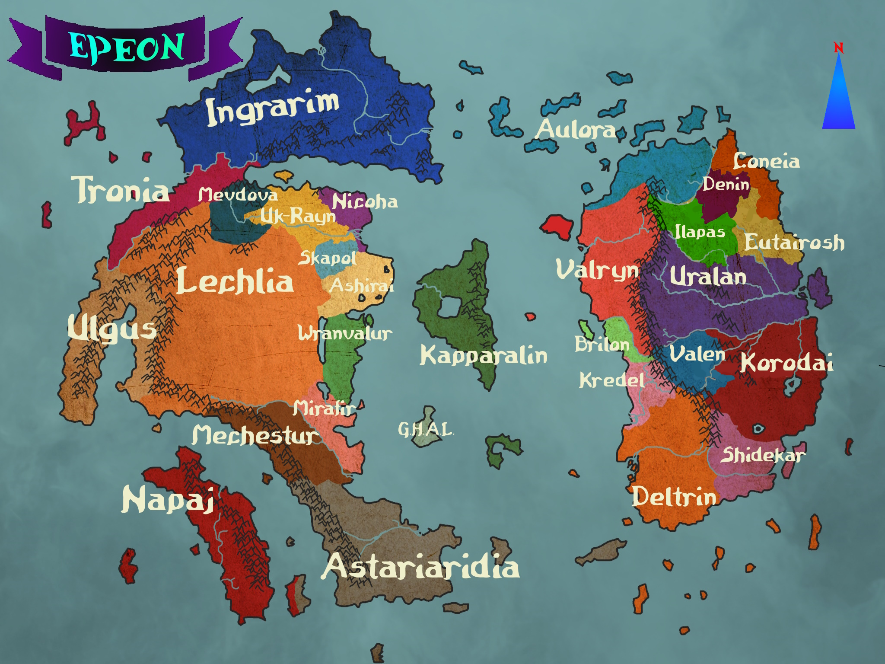

O mundo de Epeon🧙♂️
>Capital: Akaimor
Ashirai é uma região conhecida por intriga e mistério. Com
um
clima
árido na maioria da região, mas mais ameno na costa, a região contêm importantes rotas de
comércio
há muito tempo, gerando uma grande quantidade de diferentes povos integrando há região. Também
contêm várias minas de sal,
ouro e gemas.
>História: Originalmente um ponto de encontro para tribos nômades,
a região floresceu como um centro comercial, graças à sua localização privilegiada. Aos poucos,
essas tribos assentaram e formaram a Liga dos Mercadores de Ashirai, que mais tarde evoluiu para
um reino unificado sob uma coroa mercante. O reino enfrentou e sobreviveu a inúmeras tentativas
de invasão, principalmente de Lechlia, graças à sua rede de espiões e alianças astutas. Com o
passar dos
séculos, Ashirai tornou-se sinônimo de riqueza e mistério, mantendo a sua independência através
de um equilíbrio delicado de poder e diplomacia.
>Pontos de Interesse: O Farol de
Agartha, Mercado das Máscaras, As Fontes de Esmeralda, Dunas dos Ecos, Academia do Lago
>Capital: Hun Sei
Composta por uma vasta extensão de planícies e estepes,
assim
como várias ilhas, essa região é habitada por várias tribos unificadas. A principal atividade é
a caça de grandes animais, assim como mineração nas montanhas ao oeste.
>História:
Astariaridia sempre foi habitada por humanos
nômades, que pertenciam à tribos várias diferentes, mas compartilhavam lendas e uma certa
cultura em comum. Batalhas e guerras entre tribos era comum, até um lendário arqueiro vindo de
um clã simples, Hansei-Ro, o Arco de Ferro,
unificou várias tribos sob uma única bandeira e se tornou o primeiro líder das tribos. Também
nessa época elfos
vieram à região, e as tribos obtiveram o conhecimento para criar barcos mais eficásseis, e com
isso dominaram várias ilhas ao sul, criando colônias e rotas de comércio.
>Pontos de
Interesse: Porto de Kunlu, Monumento às Estepes, Templo do Dragão
>Capital: Finfed
Aulora é um frígido reino do norte, composto em sua maioria
por
diversas ilhas, mas com uma parte significativa no continente. O clima impetuoso e os invernos
rigorosos moldaram uma população resiliente, cuja cultura valoriza a auto-suficiência, a honra e
a devoção aos antepassados. Seus habitantes, conhecidos como exímios navegadores e guerreiros,
seguem antigas tradições de clãs e conselhos tribais. As várias ilhas são um ponto importante de
comércio para mercadores ousados, mas também um refúgio para piratas que desafiam os mares
gelados. Inspirados por mitos ancestrais, os aulorianos erguem grandes monólitos em homenagem
aos seus heróis e antigos gigantes, que segundo lendas ensinaram metalurgia, pesca e criação de
geléias, e várias outras habilidades para a sobrevivência dos ancestrais.
>História: O
conceito de uma Aulora
unificada é
relativamente recente. A região antes era controlada pelos seus 3 reinos vizinho: Valryn, de
onde veio a atual
população élfica; Ingrarim, de onde vieram vários anões; e Etairosh, que por si também era parte
do Reino de Uralan.
Povos da região sempre se sentiram separados culturalmente e
economicamente de seus respectivos reinos, com capitais distantes e governantes indiferentes. O
desejo de autonomia se tornou mais forte após altas taxas serem implantadas na região norte de
Valryn, que precisava de cada vez mais metal para a defesa de terras ao sul. A
unificação veio após uma guerra, liderada pelo humano Inkerin pai do atual Rei,
Rigotin. Após algumas semanas de
guerra intensa, Uralan e Ingrarim reconheceram a soberania de Uralan, mas Valryn estendeu seus
esforços por diversos anos, até
eventualmente esgotar-se de recursos.
>Pontos de Interesse: Ilhas, Mun Duril
>Capital: Guiliem
Um pequeno império na costa do continente, se destaca pela
bravura
e habilidade de guerra de seu povo.
>História: Recentemente independente do império de Valryn, atualment há vários movimentos locais
e lordes de guerra lutando e batalhando pela liderança da região.
>Pontos de Interesse: Lago Congelado de Lienm, Ponte de Lacar, Monumento das Espadas
>Capital: Enéia
Um local brutal e pouco habitado, Coneia é mais uma aliança
de
tribos
e cidades estados, conectados por uma cultura semi compartilhada. O clima é frio e seco e lendas
locais
dizem de uma maldição antiga, causada pelo primeiro líder da região que agiu como um tirano,
transformou
a terra em um local inóspito e cheio de monstros.
>História: A região era antes
pertentente ao
Império de Eutariosh que recentemente perdeu seu controle após uma revolta liderada por Com, um
guerreiro
proeminente da região.
>Pontos de Interesse: Grande Porto de Enéia, Templo do Crânio,
Analuque
>Capital: Ninéia
Um deserto frígido mas relativamente
habitável.
>História:
A região era antes pertentente ao
Império de Eutariosh que recentemente perdeu seu controle da região. Foi se re estabelecida uma
antiga
linhagem de lordes magos com regentes da região.
proeminente da região.
>Pontos de Interesse: Torre de Nin, Lago Alto de Alak
>Capital: Delani
Assolada por um impetuoso deserto no continente, as terras de Deltrin são conhecidas e temidas
por viajantes e mercadores pelas suas ilhas perigosas e águas turbulentas, infestadas por
monstros marinhos e tempestades súbitas. Os ventos imprevisíveis e as correntes traiçoeiras
fazem com que apenas os navegadores mais habilidosos sobrevivam. É possível encontrar todo tipo
de piratas, ladrões e assassinos em suas águas, atualmente dominadas por um rei pirata que
governa através do medo e da força.
>História: Inicialmente um conjunto de tribos e facções separadas, as ilhas da região se
tornaram uma importante rota de comércio e troca, até o domínio militar de Deltrin, uma cidade
costeira que expandiu seu poder e influência em um poderoso império mercantil. Anos de riqueza e
prosperidade foram lentamente corroídos por corrupção e mal controle da região. O império
colapsou por completo com incursões vindas do continente por bandas de mercenários vindas do
norte, fugindo das Guerras Vermelhas. Reduzida a cidades quase independentes tomadas por lordes
de guerra e guildas de pirataria, um general hobgoblin é respeitado, temido e odiado pela
região, que o considera rei pirata.
>Pontos de Interesse: Porto de Pombos, Penhascos de Ossos, Ilha da Névoa Eterna, Tumba do Rei
Pirata, Mercado dos Ocultos
>Capital: Escuteon
Um reino recente, consiste principalmete de planícies e
pradarias, com uma cultura forte de hipismo. Também grandes cidades foram erguidas como postos
de comércio com outras cidades.
>História: As regiões do atual
reino de Eutariosh antes eram uma província de Uralan, até uma crise interna ocorrida pelo
fato de que o rei de Uralan, Pepe II estava idoso e perto de sua morte. Incerteza e insatifação
geraram um sentimento de separação e, liderados por Laduin, uma guerra foi travada que resultou
na separação do império. Pouco tempo após isso, a influência de Laduin nas partes mais distantes
do reino, gerando vários conflitos internos. Estes confltos resultaram na separação das regiões
de
Conia, Denin e Itapas.
>Pontos de Interesse: Biblioteca do Corvo, Vale de Marelin,
Monolito
>Capital: Ghal
Não muito é conhecido dessa ilha isolada, apenas que
habitantes da
ilha são grandes comerciantes e inovadores, e que não parece existir algum tipo de governo, mas
um conjunto de guilda e grupos de comércio.
>História: É dito que um grupo de diversos halflings se rebelaram em um antigo reino nas
regiões de Wranvalur, e decidiram se exilarem para uma pequena ilha não habitada. A ilha era
infestada de criaturas reptilianas e templos de homens serpente, que foram expulsos com a
chegada dos halflings. O local é visitado por comerciantes e mercadores corajosos, com o
objetivo de obter um pouco da grande riqueza desconhecida da ilha.
>Pontos de
Interesse:Porto Gely, Torre Flutuante de Sonek
>Capital: Gongur
Grande região perigosa, local de origem dos anões, montanhas
e
gelo. É dito que os anões acestrais foram criados aqui. A região se destaca pelas grandes obras
de pedra e as gigantescas minas nas montanhas. As regiões ao norte são muito perigosas e
inóspitas, não apenas pelo clima mas também as criaturas que habitam lá.
>História: As
lendas dizem que
Bakevid, deus da forja, invenções e criações, estava em uma dura batalha com dragões, quando ele
acidentalmente golpeou uma montanha com seu martelo. O impacto continha tanta energia divina que
os fragmentos da rocha da montanha, ao cair no chão, se tornaram os primeiros anões, que juraram
sempre adorar Bakevid, a forja e a montanha. Várias técnicas de forja e magia foram dadas aos
anões por gigantes que habitavam a região. Não se sabe a primeira cidade da região, mas uma das
mais antigas e importantes foi Gongur, a capital do reino até hoje. Originalmente uma mina que
obteve muito sucesso, sua influência se espalhou por toda a região, que começou a ser
subordinada pelo líder da cidade. Com o tempo, vários anões tiveram curiosidade do mundo afora e
decidiram se espalhar, compartilhando seus conhecimentos com aqueles que
precisavam.
>Pontos de Interesse: Pico Quebrado de Bakevid, Trono do Dragão, Grande
Salões de
Geloferro, Biblioteca de Pedra, Lago das Lágrimas Congeladas
>Capital: Iterin
a região de Itapas constitui cidades e vilas semi autônomas
mas
com um lorde entre elas, com um clima frio e seco,
é uma região selvagem e sucetível à ataques de vários tipos de crituras, fazendo a vida aqui ser
bem difícil
>História: Recentemente
independente de Eutariosh, a socidedade de Itapas era habitada por comunidades no geral
autônomas mas que compartilhavam uma cultira entre si,
até serem anexadas e integradas à Uralan, que tinha interesse em minas de prata na região. Os
habitantes apoiaram a guerra de Eutariosh então
foram integrados ao império. Recentemente os habitantes se sentiam mal representados e
explorados por Eutariosh então lutaram e após um
período de conflitos, liderados pelo mago Alguin Korod, conseguiram
independência.
>Pontos de Interesse:Fortaleza Stok, Monumento de
Korod, Lago do Espelho, Torre da Visa
>Capital: Alahim
Uma gigantesca ilha com selvas maravilhosas e perigosas,
pouco é
conhecido de Kapparalin, mas se sabe que foi nestas selvas densas que os primeiros elfos foram
tirados das antigas Árvores Primordiais, alguns dizem pela prórpia deusa da natureza, Razzmsen,
para servirem como protetores do mundo natural.
>História: Eventualemte, os elfos
dominaram várias habilidades, como criar ferramentas e armas da madeira das árvores lendárias da
ilha, fazendo a própria árvore crescer na forma desejada. Após uma grande revolta na ilha,
vários deixaram a ilha para trás, se adaptando e se espalhando em quase todas as regiões de
Epeon, alguns até criando grandes reinos élficos, tentando deixar suas vidas em Kapparalin para
trás.
>Pontos de Interesse:Lago Trion, Árvore de
Origem, Porto Alit
>Capital: Palsam
A região de Korodai é seca e inóspida, sendo formada
principalmente por desertos, montanhas
e pradarias. O clima local concentrou uma grande população de orcs, goblinóides e outras
criaturas que dificultavam a
habitação de outras raças. Lendas e contos quase esquecidos dizem de um antigo reino que
existia, antes das constantes guerras com estes monstros, mas a falta de cuidado de um grupo de
arcanistas abriu portais para terras distantes, iniciando a invasão dessas criaturas no
continente. A existência de antigos templos e construções espalhadas pelas dunas vermelhas
sustentam essas teorias
>História: Por muito tempo, apenas tribos e grupos nômades
separados habitavam a região. Até
que um homem pelo nome de Kanain, o Lorde Vaper (sua verdadeira origem ainda desconhecida), de
alguma maneira
conseguiu unir um número considerável
de tribos sobre uma única bandeira. Com seu novo exército, Vaper lançou uma ofensiva contra o
reino de Uralan. Mesmo com suas
habilidades arcanas e táticas, não obteve sucesso. Após sua queda, um orc que lutou em seu
exército pelo nome de Gruumsh, muito
discontente com as ideias e decisões de Vaper tomou seu lugar e instaurou uma espécie de
semi-reino governado por ele mesmo e
líderes locais. Sábios ainda discutem como foi sua assenção, com teorias até dizendo que o
lendário ladino Salmonella o inspirou.
>Pontos de Interesse: Monolito dos Espíritos, Deserto de Dai, Eterna Fogueira de Grá,
Templo dos Cavaleiros Deji
>Capital: Azure
O recém formado Arque-Condado de Kredel tem sua existência
baseada no rio com o mesmo nome, e às poderosas tradições arnacas que permeam em sua sociedade.
Seus habitentes vivem um conflito quase constante com hordas vindas do sul.
>História:
Anteriormente, as margens do rio Kredel era lar de várias comunidades próximas com uma forte
conexão com artes místicas, unificadas eras atrás por um poderoso conselho de mestres arnacos,
que sobrevive até hoje. A região foi uma província do Império de Valryn, provendo instrumentos
místicos e magos ao império.
>Pontos de Interesse: Praça das Três Casas, Pico Rubro,
Monumento de Allawess
>Capital: Sharne
Conhecida como "A Terra do Horizonte Perdido", Lechlia é um
reino
gigantesco que se estende por uma
vasta região, contendo vários segredos e mistérios escondidos em suas dunas de areia laranja.
Com uma vasta cordilheira de montanhas ao leste e sul e um deserto extremamente árido, a vida
nessa região
é difícil e extrema. Povos da região se adaptaram em sobreviver pelo comércio com outros povos e
extração de outros bens, já
que a região não é tão fértil. Pelas condições difíceis de vida, com o tempo foi criada uma
cultura de mobilidade, nomidissismo e auto-suficiência,
com Lechlia tendo poucas
cidades, das quais a maioria se encontram nas montanhas
>História: A região era
principalmente habitada por comunidades e caravanas nômades, que transportavam bens pelo grande
deserto, desde os
lagos da costa até as montanhas ao oeste. Com o tempo, grandes postos de troca começaram a
atrair mais pessoas, eventualmente se
tornando grandes cidades, da qual a principal era Sharne ao sul e Zurk ao norte. A região foi
unificada em um
verdadeiro império sob o controle
de Ilgurat, que controlava a cidade de Sharne e rapidamente tomou controle de rotas de troca.
Várias batalhas foram travadas mas
os povos vizinhos de Lechlia em sua maioria conseguiram resistir.
>Pontos de Interesse: Monastério da Luz, Obelisco de Ilgurat, Lago das Memórias
>Capital: Fester
Mechestur é uma nação onde a maioria da população vive em
cidades,
com sua fundação em uma magia quase única. Vários gnomos
nativos do local se expecializaram em embutir objetos com magia, criando vários avanços únicos,
mas também criando
uma cultura extremamente reclusa. Suas cidades são uma maravilha para viajantes, integrando
magia em objetos do dia a dia, fazendo suas cidades parecerem ter uma vida
própria
>História: Em era atrás, a região era habitada por pequenos reinos sem muito
poderio, até a descoberta de estranhas rochas com propriedades mágicas nas montanhas, que
permitiram novos e interessantes usos arcanos serem desenvolvidos. Golor foi um dos principais
pesquisadores dessas propriedades mágicas, considerado fundador da cultura da região e venerado
por gnomos da região. Sem dúvida o evento mais marcante da história
de Mechestur foram as
Guerras Psíquicas, uma guerra civil entre grandes cidades, principalmente entre Fester e Troyor.
Os exatos motivos para
a guerra são em parte desconhecidos, mas os resultados da guerra são sentidos até hoje. A guerra
definitivamente acabou
quando uma bomba arcana, desenvolvida por vários magos e artífices foi explodida em uma cidade
ao norte. O poder desta
arma foi tão forte que é teorisado que a própria realidade foi um pouco quebrada. Por causa
disso uma grande região
do norte da nação virou um local inabitável, com constantes monstros e quebras da realidade
permeando a região. Estas panícies são praticamente inabitadas, mas rumores e sussuros são ditos
de um artífice torcido pela magia selvagem, que governa criaturas mágicas e bizarras, se
preparando para uma invasão
>Pontos de Interesse: Torre de Heirote, Planícies de Prata, Orbe Central de Fester
>Capital: Cap_Tehl
Descrição e tals
>História: História e
tals.
>Pontos de Interesse:🗿
>Capital: Lesrem
Um reino relativamente pequeno, Mirafir rapidamente se
tornou uma
região rica em recursos, por minas de metais raros e uma grande região fértil. Populada por
humanos, uma grande quantidade de elfos, halflings e outros povos foram integrados pelas rotas
de comércio com Lechlia ao lado.
Originalmente apenas a cidade de Lesrem, criou uma rápida expansão e anexação de territórios
vizinhos,
até formar as bordas atuais, integrando as culturas e tradições dos povos conquistados. A cidade
de Lesrem foi
construída no centro de um grande lago, de mesmo nome, por magos arquitetos logo após A Queda,
por ser um local estratégico,
porém seus
nomes foram perdidos pelo tempo. A Rainha de Mirafir em 1205 AQ, Suzane Castean, foi essencial
em acalmar e
apaziguar
a região de Mechestur que passava pelas Guerras Psíquicas, que também tiveram impactos
em regiões de Mirafir.
>Pontos de Interesse: Lago de Lesrem, Gigante Caído
>Capital: Koyu
Uma grande e ancestral ilha rica em aventuras, Napaj é
unificada por um Imperador e vários lordes locais que lutam entre si por controle de terras. O
Imperador de Napaj é sempre considerado a encarnação de uma divindade no plano material, com o
atual imperador, Teo Kuzin sendo apontado como uma encarnação de Shad, o deus da guerra e
conflitos. Vários
viajantes, colonizadores, exploradores e mercadores de Napaj já viajaram pelos mares fazendo
comércio com outros povos e descobrindo novos locais.
>História: Em tempos ancestrais, a
ilha de Napaj foi um poderoso último refúgio de dragões, que controlavam abertamente muitas
terras até recentemente, pelo fato de que gigantes não ajudaram neste conflito. Após isso uma
multitude de pequenos chefes e clãs se formaram, batalhando entre si e contra povos
vizinhos. Após a quase invasão completa de forças de Atariaridia, um general se ergueu das
cinzas e se tornou Kikuchi, o primeiro imperador.
>Pontos de Interesse: Templo Dourado,
Monte Keanu, Porto Velho de Takanaka
>Capital: Folski
Folski é um reino próspero graças à sua localização,
facilitando comércio marítimo e também antigos ensinamentos mágicos de uma raça inteligente que
habitava
a região, hoje reduzida à apenas lendas e mitos.
>História: Logo após A Queda,
várias cidade estados se formaram em toda a região das planícies de Nikolski. Com o tempo,
avanços mágicos, comércio e guerras, a região foi sendo unificada sob a cidade de Folski, e o
novo reino foi nomeado a partir do nome de sua nova rainha, Nikol. Uma brutal invasão dos anões
de Ingrarim ao norte deixou a região devastada e quase esquecida, até que rebeliões se formaram
e os invasores expulsos, um conselho de sábios foi criado para governar.
>Pontos de
Interesse:Ruínas de Portefeuille, Espada Colossal de Andre, Montanhas Roxas
>Capital: Num
Tendo um clima quente e brutal, Shidekar é uma comunidade de
pequenos reinados e tribos unidas sob a força de um reinado opressor. Um destaque da região é
qualquer disputa entre duas pessoas pode ser legalmente resolvido em uma disputa corporal,
muitas vezes resultando na morte e vasto entreterimento para os outros.
>História:
Shidekar
foi formado após o colapso de um império antigo, quando tribos nômades e clãs guerreiros
incluindo humanos e hobgoblins
começaram a disputar a região das montanhas ricas em minérios. Séculos de guerra culminaram na
unificação forçada sob Kiesi Sangue-Ralo. Desde
então, Shidekar é governado por facções militares, sendo seu líder supremo —
o Alto Forjador — determinado pelo domínio em combate e respeito dos clãs.
.
>Pontos de Interesse:Lago Argus, Vale do Sal, O Grande Estádio
>Capital: Cap_Tehl
Descrição e tals
>História: História e
tals.
>Pontos de Interesse:🗿
>Capital: Nova Mughiria
Uma região quente e úmida ao sul, pradarias ao centro
e gélido ao norte, Tronia é um conjunto de tribos, cidades e grupos de mercenários unificados
por um misterioso e poderoso mago que domina a região á mais tempo do que qualquer um pode
dizer. As ilhas ao norte são ditas conter gigantescos
monstros e grandes répteis, onde apenas os exploradores mais corajosos (ou tolos) ousam
ir
>História: A região de Tronia foi pouco afetada pela Queda, pois dragões nunca foram
muito presentes na região, que já era dominada por grandes bestas e monstros. A vida para os
primeiros habitantes da região era extremamente difícil por causa disso, até que vários dragões
e estes monstros lutaram entre si, abrindo caminho para seres humanóides. Porém estes monstros
ainda podem ser encontrados nas ilhas ao norte. Vários comerciantes viajaram os oceanos para
colonizar e habitar outras terras, como Coneia e Denin.
>Pontos de Interesse: Porto
Hanam
>Capital: Cap_Tehl
Descrição e tals
>História: História e
tals.
>Pontos de Interesse:🗿

>Capital: Iknus
Um local quente e de difícil acesso, os habitantes
desenvolveram
cidades e habilidades para
sobreviver nas montanhas, que cobrem toda a região. Com um clima quente e que varia de muito
chuvoso à àrido, o povo que habita as montanhas costuma ser mais isolacionistas, enquanto os que
habitam nas poucas terras baixas se tornaram grandes comerciantes e exploradores, alguns até
alcançando o outro continente mesmo na Era dos Gigantes.
>História:Os primeiros gigantes
à habitar a região expulsaram
vários malignos dragões das Montanhas de Ouro, porém alguns ainda podem ser encontrados,
planejando sua vingança. Estes gigantes encontraram os primeiros humanóides vivendo próximo às
praias do local, que os consideraram grandes reis e libertadores. Os gigantes, para ensinar
estes humanos seus costumes e habilidades, criaram versões menores de si mesmos chamados de
Golias. Estes Golias conviveram com humanos e ensinaram muitas habilidades, como viver entre
montanhas e domar suas criaturas. Por razões ainda desconhecidas, os gigantes deixaram estas
terras, que hoje se uniram no Reino de Ulgus, governado pela Imperatriz Miztak
>Pontos de Interesse:Pico Pichi, Templo Aéreo de Molezum, Forte de Carzio
>Capital: Suanam
Localizada em uma região bem úmida e quente, Uralan se
tornou um
dos reinos mais poderosos e influêntes
da região, sendo um ponto estratégico no comércio entre reinos e defesa de criaturas malignas. A
sociedade de Uralan é composta por diversos povos de outras regiões que se
estabeleceram em suas terras.
Também abriga o maior rio conhecido, o rio Garapê, onde a capital está localizada. A geografia
de Uralan é bem diversa,
com pradarias próximas da costa, uma gigantesca selva ancestral ao centro, uma rede de montanhas
dividindo o reino no centro do continente
e uma grande região pantanosa além das montanhas.
>História: O povo de Uralan é composto
por vários grupos: os
que já habitavam a região em tempos antigos, exploradores e mercadores que vieram do mar,
principalmente de Ulgus e Napaj
que fundaram as primeiras cidades como postos de comércio,
e também o povo do norte do próprio continente. Lendas são contadas de vários exploradores
originais, que se aventuraram nas selvas e florestas do interior, para nunca mais retornar.
Outros permanecerão em portos e postos de comércio, que eventualmente se tornaram grandes
cidades. A
capital foi fundada pelo primeiro imperador de
Uralan, Pepe I, que unificou
as outras cidades e habitações para impulsionar a troca e comércio. No reinado de seu filho,
Pepe II foram criados diversos
centros de pesquisa arcana, e uma guerra foi travada com Korodai, onde Uralan saiu vitoriosa, e
as regiões ao norte se
rebelaram e se dividiram de Uralan, criando assim o reino de Etairosh. O atual imperador é João
Canário, um elfo patrulheiro e
exímio arqueiro, que defendeu o imperador e lutou bravamente na guerra do norte, indicado
diretamente por Pepe II, que hoje
habita as estantes imensas da Biblioteca Real como um fantasma.
>Pontos de Interesse:
Biblioteca Real de Suanam, Templos
da ilha de Mar-jol, Pântanos de Tuné, Praça dos Heróis em Ohmar
>Capital: Lenbar
Valem é uma região inóspida e obscura, com uma cultura
muitas vezes considerada macabra, formada por anos de opressão sobre Korodai. Suas riquezas vêm
principalmente da mineração de metais e pedras preciosas. Necromancia e outras
magias escuras são comuns.
>História: Recentemente separada do controle de Korodai,
a região foi fundada com base em uma rebelião de elfos e outros seres oprimidos e descontentes
com a vida em Korodai
>Pontos de Interesse: Minas Rubras de Karam, Obelisco das Três
Luas,
Vale do Sol Escuro
>Capital: Romorin
Uma vez um grande e expanssívo império que se estendia por
toda a
costa,
Valryn atual ainda é uma poderosa força militar mas diminuída e mais focada nas suas terras
atuais. Suas cidades são um importante ponto comercial, um dos únicos permitidos na misteriosa
Kapparalin. Grandes montanhas trouxeram proteção ao império, assim como vastas colinas trouxeram
ampla oportunidade para agricultura. O povo de Valryn se orgulha de, segundo lendas, foram um
dos primeiros a expulsar dragões ao exílio, e estabelecer cidades seguras.
>História: A região foi originalmente habitada por elfos que ainda são a maior parte da
população.
Chegaram ao continente vindos da ilha de Kapparalin, expulsando gigantes que habitavam ali e
contruindo as
primeiras contruções. Após uma era dourada de prosperidade, o império começou a se expandir para
o sul e
norte, integrando e dominando os habitantes. Alguns aceitaram a proteção do império mas muitos
estavam
insatisfeitos, entrando em guerra. Dessa a mais impactante para Valryn foi a Guerra do Norte,
contra
Aulora. A guerra trouxe tantos prejuízos que o imperador foi destronado e seu filho, David, foi
escolhido
como novo imperador, trazendo uma era de paz e recontrução para o império
>Pontos de
Interesse: Obelisco Branco de Gutroia, Torre Horizontal de Xernos, Palácio de Arje, Pedra
Inicial
>Capital: Dusan
Uma região relativamente amena, a região de Wranvalur sempre
foi conhecida por estudos de magias poderosas e esotéricas em outros locais proibidas, como
Necromancia. Atualmente governada por um conselho de 6 poderosos magos que representam suas
regiões, poder e arcanismo dominam estas terras.
>História: Em eras passadas, o local era
dominado por gigantes malignos, que com anos de conflito foram expulsos e recuaram em exílio sob
o poder de humanóides que juntaram suas forças para afastá-los. Esta nova união durou
pouquíssimo tempo, pois corrupção, falta de organização e ataques de criaturas malignas como
hobgolins reduziram a região à cidades separadas e subjulgadas. Isso permaneceu até que uma
união de 7 conjuradores poderosos, liderados pelo legendário Mago Theoken, unificaram as terras
e estabeleceram um conselho onde eles tomavam as decisões. Eventualmente Theoken desaparaceu,
deixando o conselho para governar, que se mantém até hoje.
>Pontos
de Interesse:Zigurate do Lago, Templo das Seis Lágrimas, Torre de Valur
{kind=link}